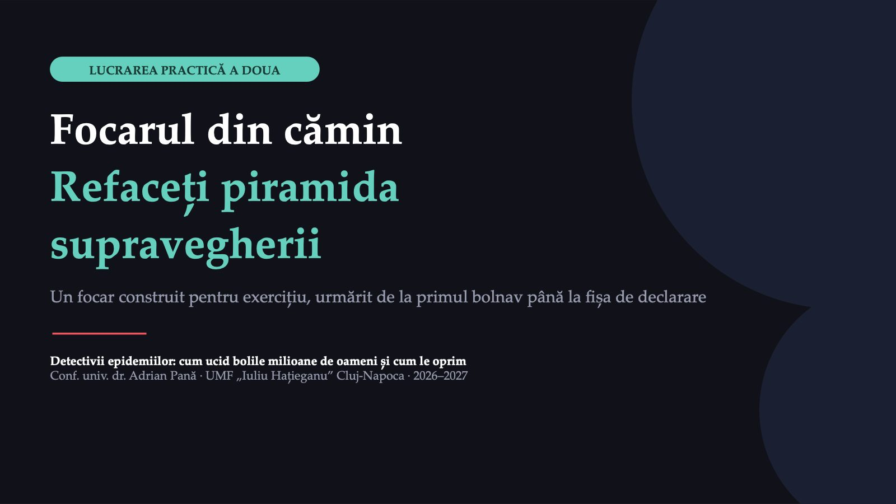
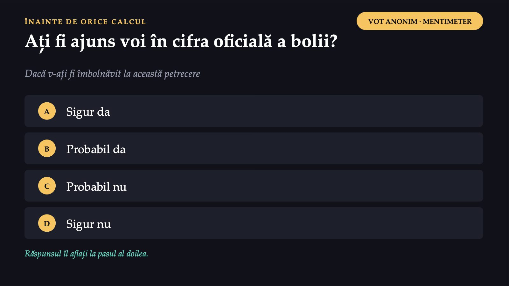
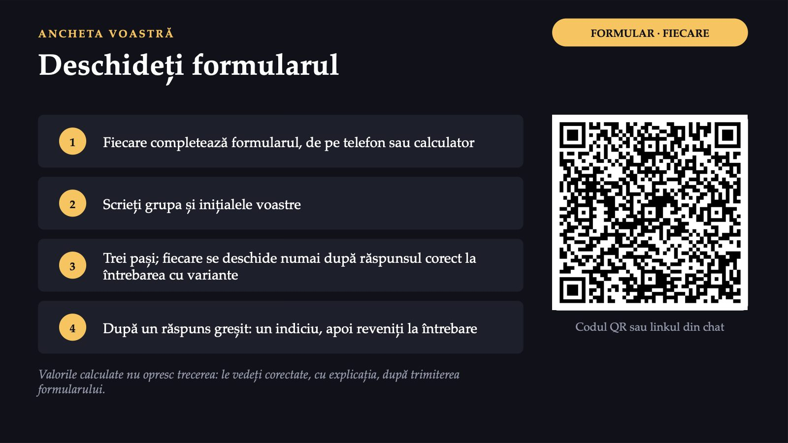
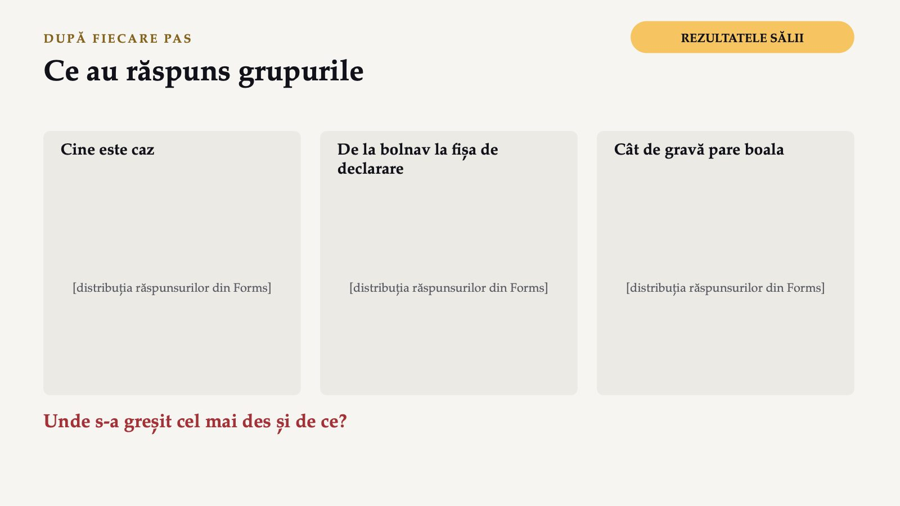
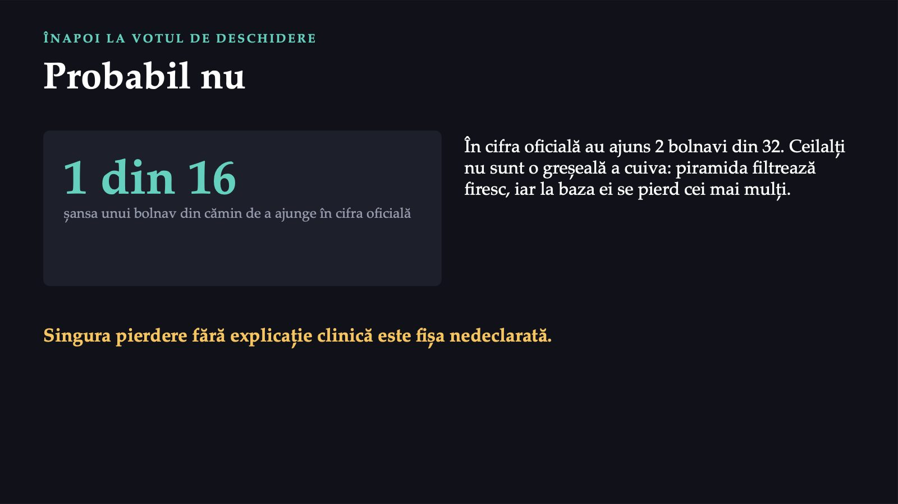
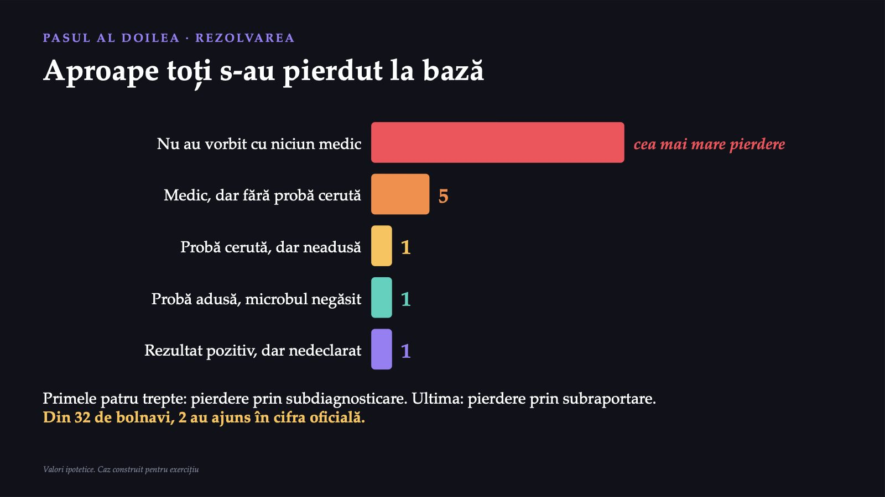
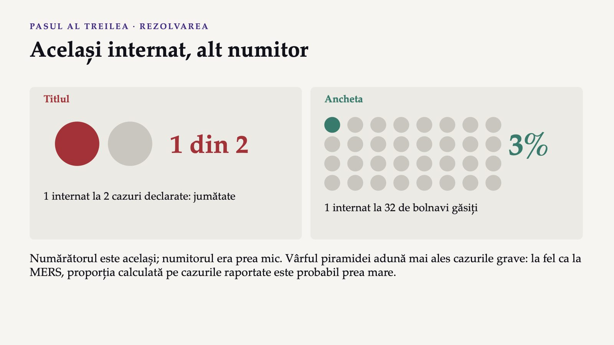
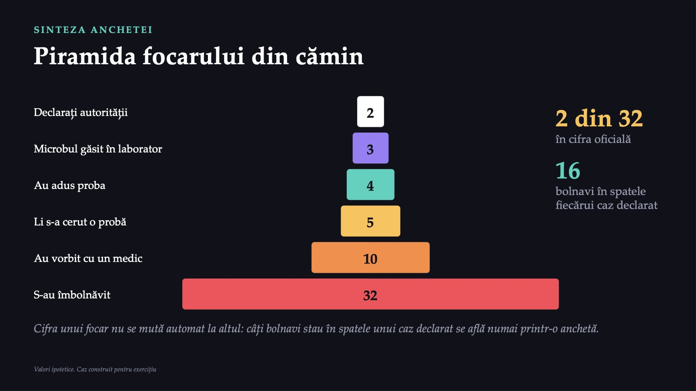
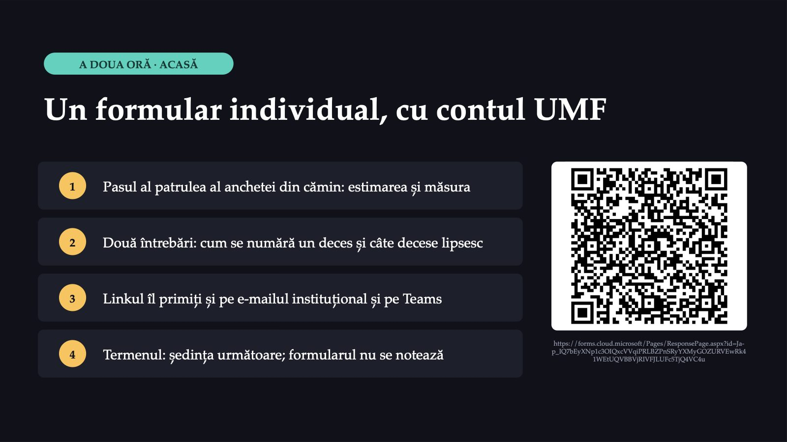
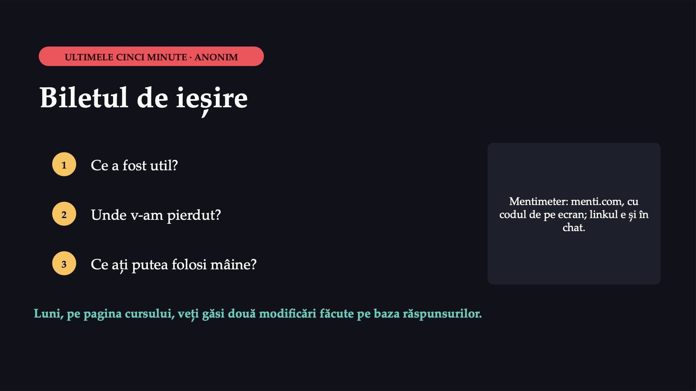

Focarul din cămin

1 / 16Lucrarea de azi continuă cursul: aceeași întrebare, pusă de data aceasta de voi. Dintre colegii care s-au îmbolnăvit, câți ajung în cifra oficială și unde se pierd ceilalți?
Petrecerea de la etajul trei
![CAZ CONSTRUIT PENTRU EXERCIȚIU · DUMINICĂ DIMINEAȚA Petrecerea de la etajul trei Grupul căminului Am stat toată noaptea în baie Eu am vomitat de două ori, acum sunt bine Pe mine mă doare doar stomacul Cei mai mulți rămân în pat și beau apă SÂMBĂTĂ SEARA Petrecere în bucătăria comună, 60 de persoane; fiecare aduce ceva de mâncare LUNI Un coleg ajunge la camera de gardă, deshidratat MIERCURI Autoritatea de sănătate publică primește două fișe de declarare, cu aceeași adresă: căminul Echipa de anchetă sunteți voi. Caz construit pentru exercițiu: căminul, oamenii, boala și cifrele sunt inventate](diapozitive/LP02/002.jpg) 2 / 16
2 / 16Sâmbătă seara, o colegă își serbează ziua în bucătăria comună a etajului trei. Duminică dimineață, grupul căminului se umple de mesaje. Miercuri, autoritatea primește două fișe de declarare cu aceeași adresă și cere o anchetă.
Ați fi ajuns voi în cifra oficială a bolii?

3 / 16Înainte de orice calcul, un vot anonim: dacă v-ați fi îmbolnăvit la această petrecere, ați fi ajuns în cifra oficială a bolii? La finalul lucrării ne întoarcem la el.
Deschideți formularul

4 / 16Vă grupați câte trei sau patru vecini de bancă. Un singur formular pe grup, de pe un singur telefon. Fiecare pas se deschide numai după ce grupul alege varianta potrivită la întrebarea cu variante.
Ce au răspuns cei 54 de respondenți
![PASUL ÎNTÂI · CINE ESTE CAZ Ce au răspuns cei 54 de respondenți La petrecere au fost 60 de persoane. Chestionarul online a primit 54 de răspunsuri. Ce au răspuns · Persoane Diaree (cel puțin trei scaune moi într-o zi) sau vărsături, începute între sâmbătă seara, după începutul petrecerii, și marți seara · 32 Diaree sau vărsături, începute vineri, înaintea petrecerii · 1 Numai greață sau dureri abdominale, fără diaree și fără vărsături · 4 Niciun simptom · 17 Alegeți definiția de caz potrivită. Apoi spuneți câți respondenți intră în număr și calculați rata de atac: din câți au răspuns, câți s-au îmbolnăvit. Valori ipotetice. Caz construit pentru exercițiu](diapozitive/LP02/005.jpg) 5 / 16
5 / 16Înainte de a număra bolnavii, scrieți regula după care îi numărați. O definiție de caz are patru elemente: semnele, locul, timpul și persoana. Nu conține alimentul pe care îl bănuiți.
Cazurile, treaptă cu treaptă
 6 / 16
6 / 16Piramida supravegherii are cinci trepte: îmbolnăvirea, mersul la medic, proba, rezultatul pozitiv și raportarea. Acum le numărați pe un focar întreg.
Ați crede acest titlu?
 7 / 16
7 / 16Un singur bolnav a fost internat, colegul ajuns la camera de gardă. O pagină de știri locale preia datele oficiale și titrează. Ați crede acest titlu?
Ce au răspuns grupurile

8 / 16După fiecare pas, ne uităm împreună la distribuția răspunsurilor grupurilor: unde s-a greșit cel mai des și de ce.
1 din 16

9 / 16Răspunsul care se potrivește cu acest focar este „probabil nu”. Un bolnav din cămin avea cam o șansă din șaisprezece să ajungă în cifra oficială.
(b)
![PASUL ÎNTÂI · REZOLVAREA Regula care poate fi aplicată: varianta (b) (b) semnele, locul, timpul și persoana; fără alimentul bănuit 32 din 54 respondenți intră în număr după această regulă 6 din 10 rata de atac la respondenți: din câți au răspuns, câți s-au îmbolnăvit Varianta (a) ar număra numai vârful piramidei, pentru că probă au dat doar câțiva bolnavi. Dintre cei 32, 3 au o probă pozitivă (cazuri confirmate); ceilalți sunt cazuri probabile, fără confirmare de laborator. Rata de atac este calculată numai pe cei care au răspuns; 6 participanți nu au răspuns.](diapozitive/LP02/010.jpg) 10 / 16
10 / 16Varianta (b) are toate cele patru elemente. După regula ei, 32 dintre cei 54 de respondenți sunt cazuri, adică cam șase din zece.
Aproape toți s-au pierdut la bază

11 / 16Dintre cei 32 de bolnavi, cei mai mulți nu au vorbit cu niciun medic. Celelalte pierderi sunt mici. Primele patru sunt subdiagnosticare, ultima este subraportare.
3%

12 / 16Titlul împarte un internat la două cazuri declarate. Ancheta a găsit 32 de bolnavi, iar internat a fost tot unul singur, adică 3%. Numărătorul este același; numitorul era prea mic.
Piramida focarului din cămin

13 / 16Piramida focarului din cămin: din 32 de bolnavi, 2 ajung în cifra oficială. În spatele fiecărui caz declarat stau 16 bolnavi, dar numărul nu se mută automat la alt focar.
Luni dimineață
 14 / 16
14 / 16Patru lucruri pe care le puteți face diferit de luni dimineață, ca studenți și ca viitori medici.
Un formular individual, cu contul UMF

15 / 16A doua oră o lucrați singuri, acasă, într-un formular individual scurt, cu contul UMF. Termenul este ședința următoare, iar formularul nu intră în notă.
Biletul de ieșire

16 / 16Trei întrebări anonime, pe telefon. Luni veți vedea pe pagina cursului ce am schimbat după răspunsurile voastre.
Săgeți sau spațiu: navigare · O: vedere de ansamblu · N: notele prezentatorului · F: ecran complet · Esc: închidere